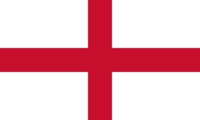
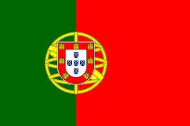
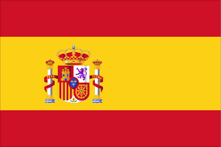
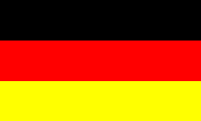

| Equipes |
|
|
| Seleção que mais fez gol |
 Inglaterra /  Portugal |
12 gols |
| Seleção que mais tomou gol |
 Costa Rica Costa Rica |
11 gols |
| Cartões |
 Arábia Saudita Arábia Saudita |
14 Cartões |
| Recorde de gols marcados num jogo |
Inglaterra x  Irã Irã |
8 gols |
| Vitória mais elevada |
 Espanha x Costa Rica |
+7 Gols |
| Melhor finalizadora |
 Argentina Argentina |
51% de precisão |
| Seleção mais faltosa |
Arábia Saudita |
55 faltas cometidas |
|
Jogadores
|
|
|
| Artilheiros |
Rashford / Morata / Mbappé /  Gakpo / Gakpo /  Valencia Valencia |
3 gols |
| Melhor finalizador |
Lionel Messi |
61% de precisão |
| Mais passes |
Rodri |
461 passes |
| Mais dribles |
 Jamal Musiala |
9 dribles |
| Mais impedido |
Cristiano Ronaldo |
6 impedimentos |